How we deploy applications at [cB]
Abhinav Gautam · 11 November 2026
We started [cB] nine years ago as a small team. Back then there were fewer projects, and a small team could handle them by hand.
As the team grew, so did the number of projects and servers, and doing things by hand stopped working. A developer who needed a database, a changed secret or a new teammate added had to ask one of the few people who knew how, and wait. Automation, and one central place that knew what existed, became important.
Our needs are also different from most companies'. We cannot simply rely on one cloud provider. Our work runs on multiple servers, in multiple state data centres, on multiple operating systems, with multiple providers. No single vendor's console covers all of that.
In that situation, building our own platform made sense. We call it Engineering Fabric. It does not replace GitLab or Kubernetes or Vault. It sits between them, keeps one record of which application owns what, and makes the changes in each system that a person used to make by hand.
The rest of this post is how it works: what we host ourselves, what is managed for us, and how an application gets from a request to a running pod.
The view from above
Here is everything in one picture. It is dense, so here is how to read it.
- The dotted outline is what we host ourselves. Everything outside it, above and below, is a managed service.
- Teal arrows are Fabric doing something: creating a repository, writing a secret, committing a manifest, reading a status. The label says what.
- The rust line is the deploy path, numbered in order. Flux sits on it between GitLab and the cluster: it sees a new image in the registry, commits the tag to the cluster repository, pulls that repository, and applies it. None of that touches Fabric.

Tap the diagram to enlarge itOpen the diagram full size
Two things in that picture were decisions, not accidents. The first is that Fabric has no arrow into the deploy path. A merge reaches production through GitLab, the registry and Flux, and none of those ask Fabric for anything. Fabric sets things up beforehand and reports afterwards. The second is that Fabric never creates anything in the cluster directly. It commits files to the cluster repository like a person would, and Flux applies them. What Fabric does directly in Kubernetes is read, plus a restart when someone asks for one.
Self-hosted and managed
The split follows one question: if this went away tomorrow, or someone outside could read it, how bad would that be? Our clients' source code, the images built from it and the secrets those images run with are the business. Those stay on machines we control. Things that need a worldwide network, or that are somebody else's identity system to begin with, we use as managed services.
Self-hosted
On our own servers and our own Kubernetes cluster.
- GitLab, its runners and its registry
- Code, merge requests, pipelines and every built image.
- Kubernetes, with Flux
- One cluster. Staging and production are separate namespaces. Flux applies whatever the cluster repository says.
- Vault and External Secrets
- Vault holds every secret. External Secrets makes each application's own secrets available to it inside the cluster.
- Traefik and cert-manager
- Routing into the cluster, and certificates that renew themselves.
- SonarQube
- The code quality gate on every pipeline.
- PostgreSQL and MySQL servers
- Databases and logins, created per application.
- Prometheus and Grafana
- Metrics and dashboards.
- NetBird and Hoppscotch
- The VPN in front of internal tools, and shared API collections.
- A mail and SMS gateway
- Applications send through it, so provider keys stay in one place.
- Engineering Fabric
- It runs in the same cluster and is deployed the same way as everything else.
Managed
Run by a provider. We are a customer.
- Microsoft Entra ID
- Everyone signs in with their work account. Groups come from here.
- Microsoft Teams
- Where approvals are asked for and deployments are announced.
- Cloudflare
- DNS for our domains, and the CDN for public files.
- S3 service
- Private file storage for applications.
- Google Cloud
- Maps and reCAPTCHA keys, Firebase projects.
- Public certificate authorities
- cert-manager asks them for free certificates. We also accept ones a client has bought.
- Email and SMS providers
- Delivery. Our gateway hands messages to them.
Figure 2. What we run, and what is run for us.
Hosting this much is work. What we get back is that when a client asks where their code and data sit, the answer is one sentence.
What Fabric keeps track of
Fabric's whole model is four words. A project is a client engagement and has an owner. A project has one or more applications. An application is any piece of software we build and run for that project, whatever it is. An application has environments: staging, production, and a "global" one for things that are not tied to either, such as the repository. An environment has services: Kubernetes, a database, a web address, file storage, an API workspace.
Every repository, namespace, database and bucket we have belongs to one of those. That sounds like bookkeeping, and it is, but nearly everything else in this post follows from it. Fabric can add a new teammate to the right GitLab project because it knows which project that is. It can tell you who is able to read production secrets because it knows which Vault path is production. It can delete an application cleanly because it knows everything the application ever got.
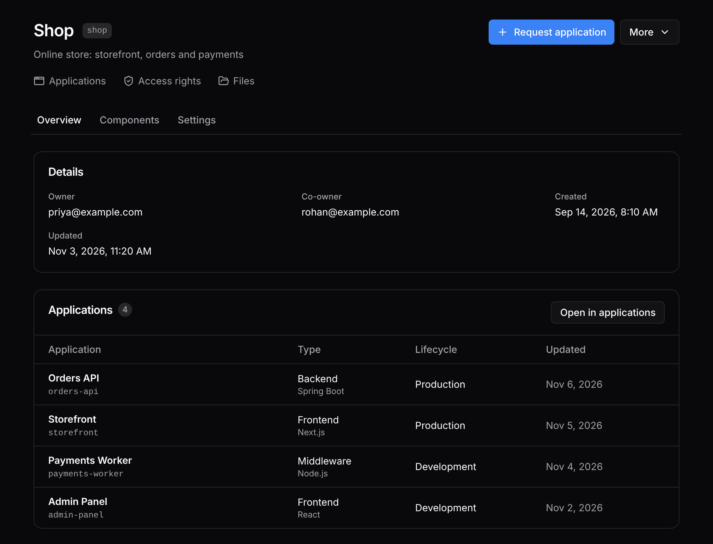
A new application
The project owner asks for a new application from the project page. They give it a name and pick its type and technology stack. The stack decides which repository template it starts from, and the template already carries the shared pipeline, a Dockerfile and the project layout we expect.
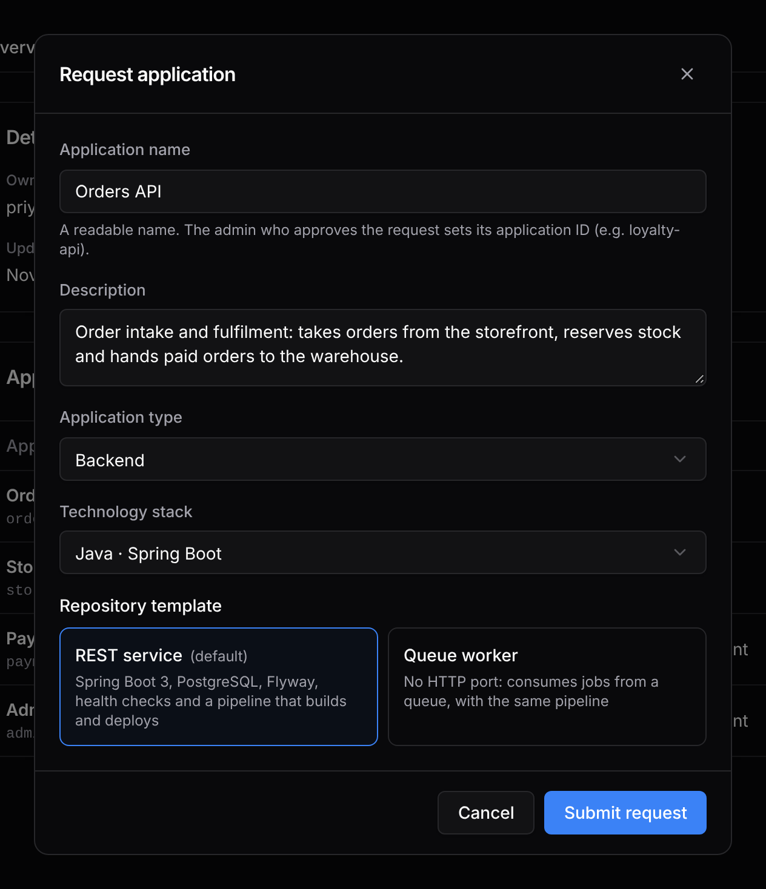
The request goes to the admins, in Fabric and as a card in Teams. Approving it is the one manual step, and the admin's real job there is to give the application its ID. That ID becomes the repository name, the namespace, the Vault path and the folder in the cluster repository, so it is worth ten seconds of thought.
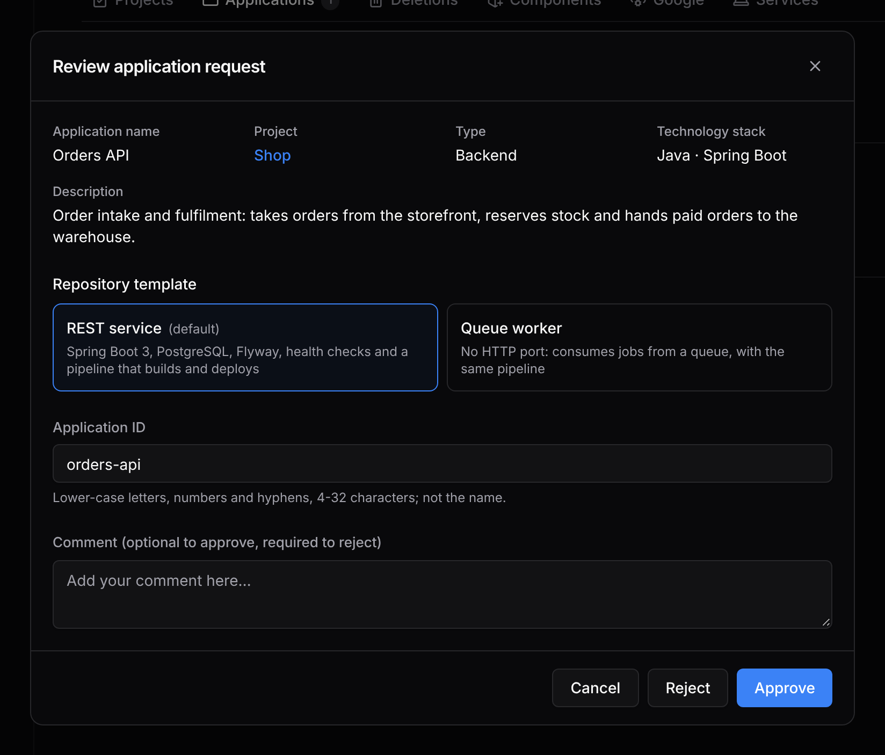
From there a workflow takes over.
- Project owner → Fabric asks for an application: name, type, stack
- Fabric → Teams approval card to the admins
- Admin → Fabric approves, gives it an ID
- Fabric → GitLab repository from the stack template
- Fabric → GitLab owner and team as members
- Fabric → SonarQube project, linked to the repo
- Project owner → Fabric creates the staging environment
- Fabric → Cluster repo namespace, Deployment, image automation
- Fabric → Vault a path for this app and environment
- Fabric → Teams a chat for the application
- Fabric the application page shows each step and which ones are still running
The workflow matters more than the individual steps. GitLab might be slow, SonarQube might be restarting, a commit to the cluster repository might conflict with another one. Each step is recorded as it finishes, so a failure at step six is retried from step six. Before this, a half-created application was a small archaeology project: which of the ten things exist, and which do I still have to do?
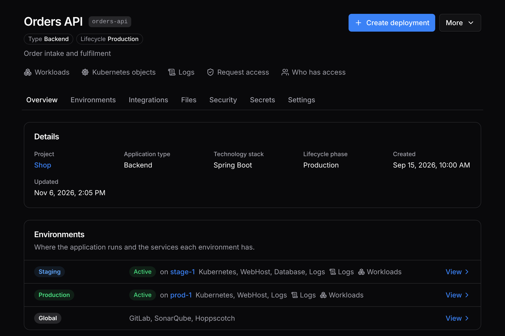
Environments and services
An application starts with almost nothing: a repository and a quality gate. Everything else is a service added to an environment, and the owner adds it from the application's page.
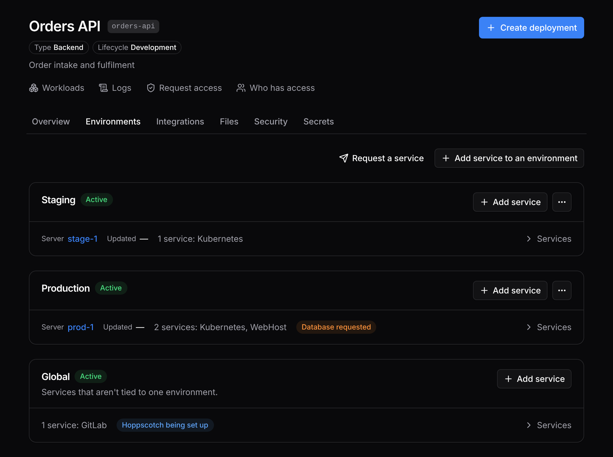
Some services an owner can switch on themselves. Others go to an admin first. Which is which is a setting on the service, not something written into the code, so we can loosen it as we come to trust a setup. Either way the same code does the work, which means a self-service database and an admin-approved database are created identically.
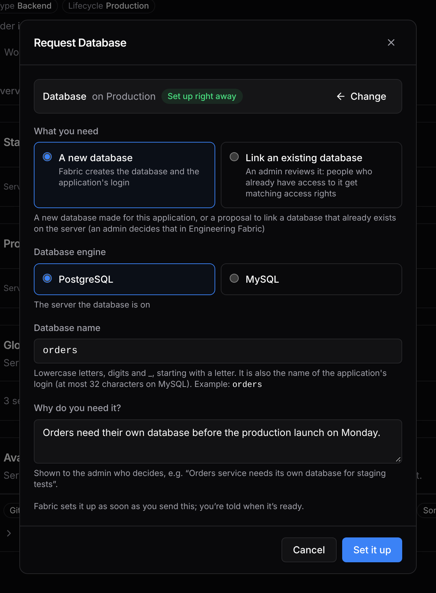
A few examples of what "add a service" turns into:
- Kubernetes. Fabric commits a folder for the app and environment to the cluster repository: namespace, Deployment, Service, the image automation that follows new builds, and the object that gives it its secrets. Flux applies it.
- Database. Fabric creates the database and a login on the right server, grants the login only that database, and writes the connection details straight into the app's secrets. The developer never sees the password.
- Web address. Fabric adds the route in Traefik, creates the DNS record at Cloudflare, and asks cert-manager for a certificate. The page shows the certificate's status until it is issued.
- File storage. A folder on the public CDN, or a private bucket on an S3 service with its own key, again written into the app's secrets.
From merge to running
This is the part that happens many times a day, and the part where Fabric does the least. That is on purpose.
- Developer → GitLab merges to main
- GitLab pipeline: code owners, quality scan, then the image build
- GitLab → Registry pushes build-412-3f9a1c2
- GitLab → Fabric pipeline finished
- Fabric → Teams pipeline card
- Registry → Flux a newer tag exists
- Flux commits the new tag to the cluster repository
- Flux → Kubernetes applies the commit
- Kubernetes starts the new pod, then stops the old one
- Kubernetes → Fabric rollout status
- Fabric → GitLab marks the commit as deployed
- Fabric → Teams deploy card: 2 of 2 pods ready
- Fabric keeps watching the new pods for ten more minutes
Every repository includes the same pipeline from one shared place, so a fix to the pipeline reaches every application at once. It checks code owners, runs the SonarQube scan, and builds the image. A merge to main produces a production image; a merge to the staging branch produces a staging image. The tag carries the build number and the commit, so anyone looking at a running pod can tell exactly which commit it is.
Nobody runs a deploy command. Flux notices the newer tag, writes it into the app's manifest in the cluster repository, and applies that commit. So the cluster repository is the only door into the cluster, and its history answers "what changed, and when?" for every application at once. Rolling back is reverting a commit.
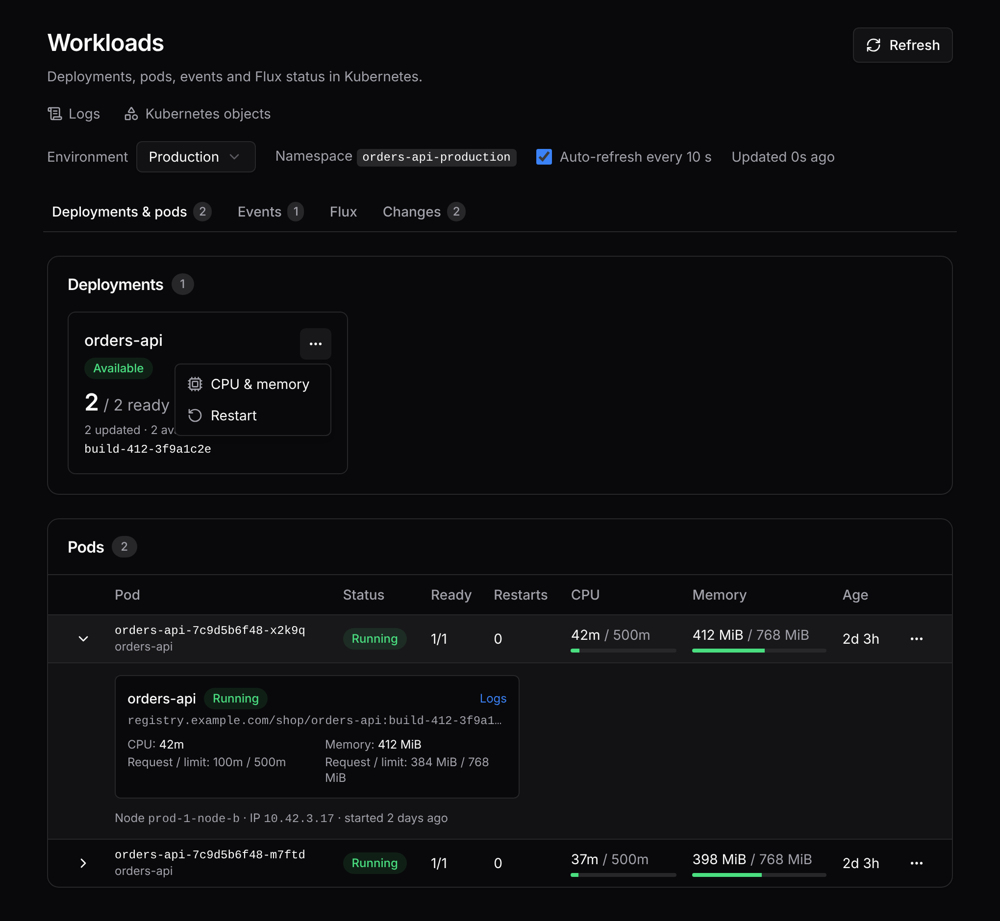
Fabric's part starts when the rollout does. It watches the Deployment, marks the commit in GitLab once the new pods are ready, and posts a card in the application's Teams chat. A rollout that Kubernetes calls successful can still fall over two minutes later, so Fabric keeps watching the new pods for ten minutes. If one starts crash-looping or is killed for memory, the same card is updated with the reason and a link to that pod's logs. The developer who merged finds out in the chat they already have open.
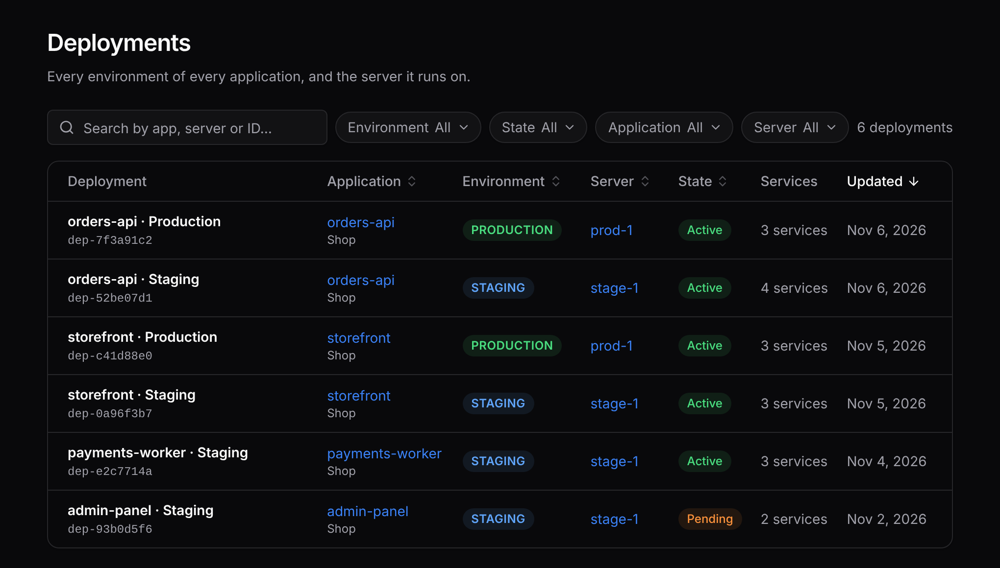
Secrets
Fabric manages every application's secrets. Developers set them on the application's page, per environment. They never get a Vault login and never touch a Kubernetes Secret. Protected values, such as database passwords, can be replaced but not read back by anyone who is not an admin, and Fabric keeps a log of who touched which keys.
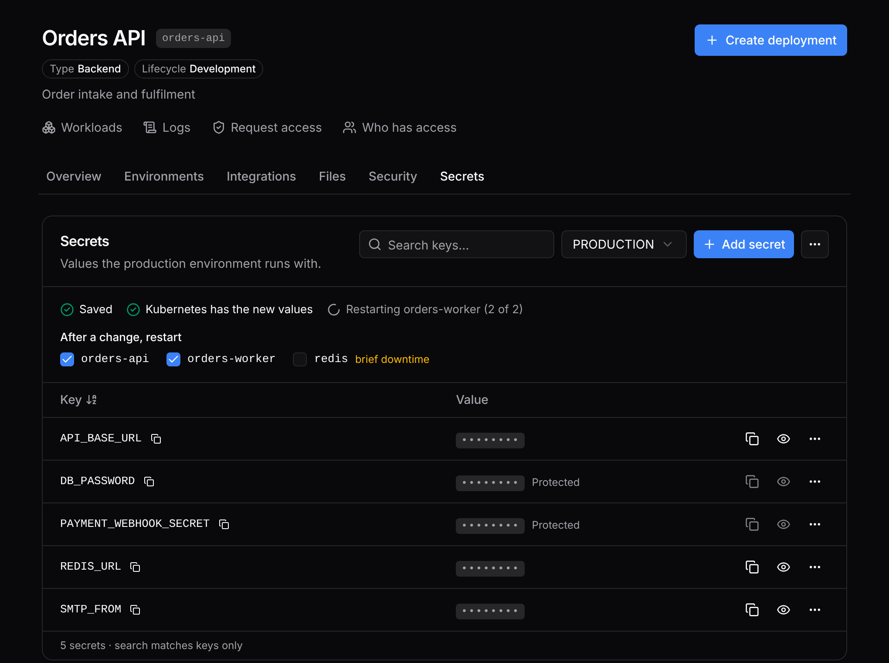
Fabric itself cannot read Kubernetes Secrets. We left that permission out deliberately, so that a bug in Fabric cannot leak a value it never had.
Domains and certificates
An application's addresses live on its Integrations tab, next to everything else it is connected to. Adding one creates the route, the DNS record and the certificate together, and removing one takes all three away. Certificates come from free public authorities through cert-manager and renew on their own. When a client has bought a certificate, an admin uploads it; Fabric stores it in Vault and serves it the same way.
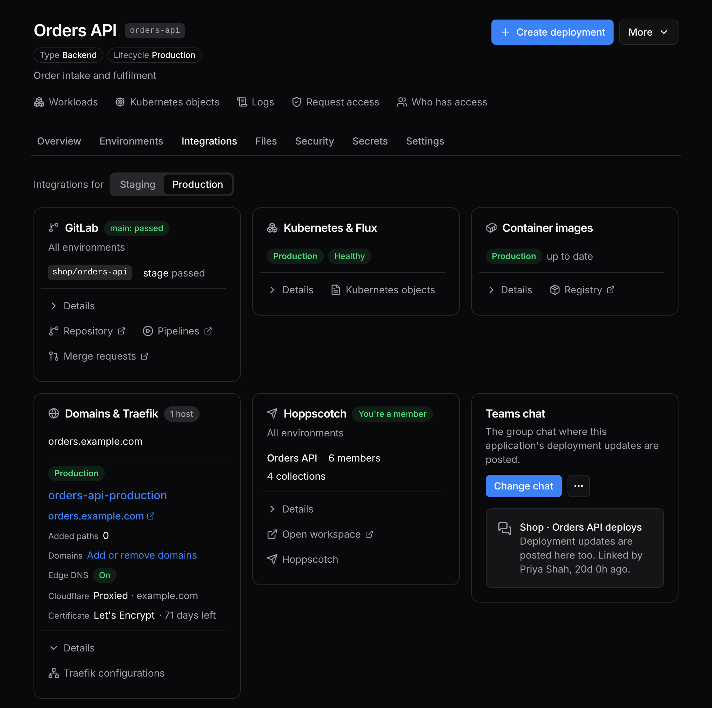
Fabric keeps one dashboard of every certificate in the cluster with the days each has left, and sends a reminder well before a bought one expires, since those cannot renew themselves.
Files
Applications get two kinds of storage. Public files sit behind the CDN and get a stable link. Private files sit in a bucket on an S3 service that only that application's key can reach. Both show up on the application's Files tab, where the people with access can browse, upload and delete without being handed storage credentials. Deleted private files go to a trash folder for thirty days first.
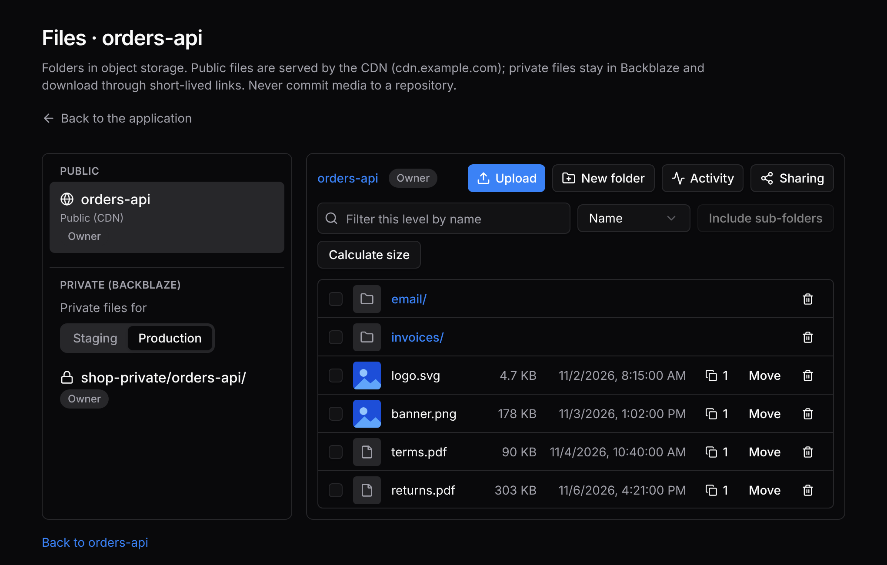
Email and SMS
Almost every application we build sends email or SMS: one-time passwords, receipts, alerts. The simple way is to give each application the provider's API key. That has two problems.
The first is that credentials leak. A provider key copied into ten applications sits in ten sets of secrets, on ten developers' laptops at some point, and in whatever a developer pasted while debugging. Rotating it means touching all ten. The second is that nobody can answer a simple question: who is sending how much? The provider's bill shows one number for everyone.
So applications do not talk to the providers. They send through a gateway we run, and only the gateway holds the provider credentials. Fabric gives each application its own sender account and token for an environment and writes the settings into that application's secrets, so a developer never handles a key. Our internal [cB] libraries already know how to talk to the gateway, which means that in an application's code sending a message is one call and no setup.
Because everything passes through one place, we also get a high-level audit log for free: which application sent what, when, through which sender, and whether it was delivered. It does not record what the messages say beyond the subject line. It is enough to see who is sending how much, to notice an application that suddenly sends ten times its usual volume, and to switch one application off without affecting the others.
Who can do what
Signing in is the same everywhere. Fabric and every tool around it use single sign-on through Azure, so a developer has one work account and never has to hunt around for a password to GitLab, SonarQube or anything else. What that account is allowed to do in each tool is what Fabric decides.
Access is asked for per application, per environment and per service: read on production logs, write on staging secrets, and so on. Nobody has standing access to an application they do not work on.
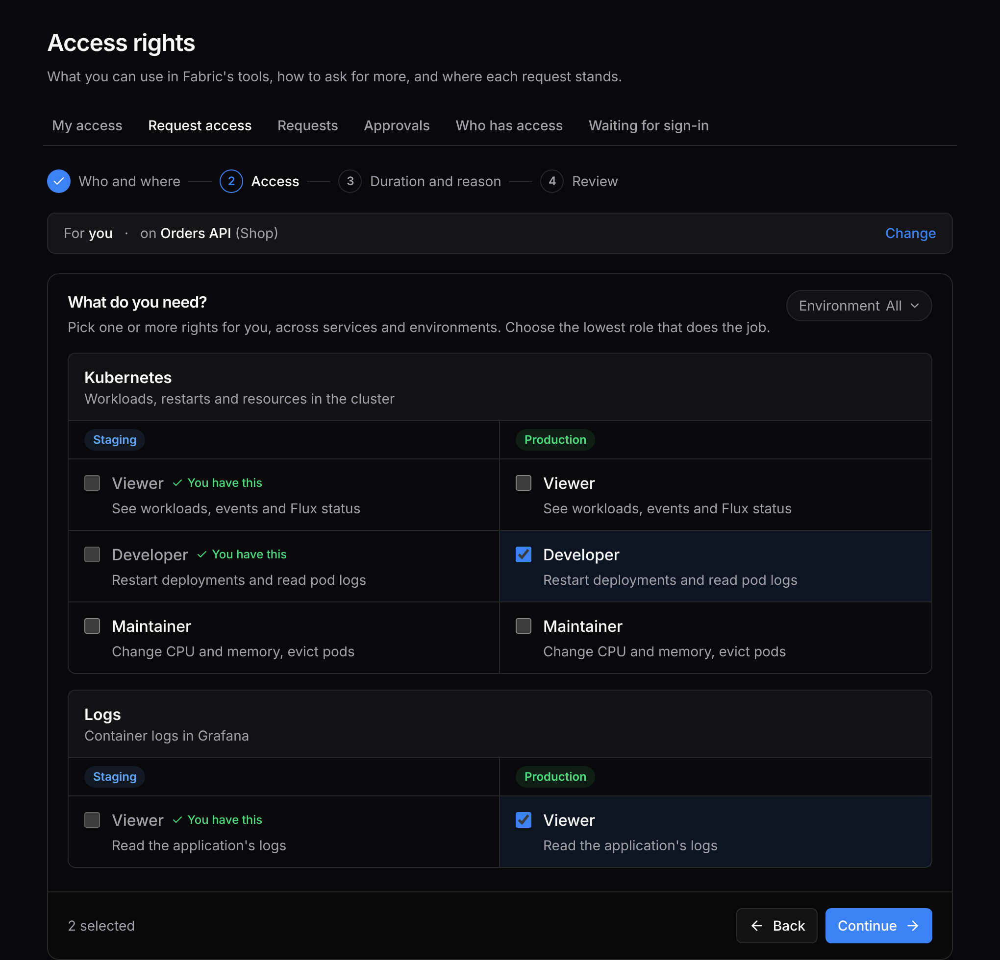
The project owner approves first and an admin second, and both can do it from the card that arrives in Teams. Once approved, Fabric applies the access in the system that enforces it: a GitLab role, a SonarQube permission, a database grant, a storage permission. If the person has never signed in to GitLab or SonarQube, Fabric creates the account first, so access is waiting for them on day one. Access can carry an end date, and Fabric warns a week ahead and removes it on that date.
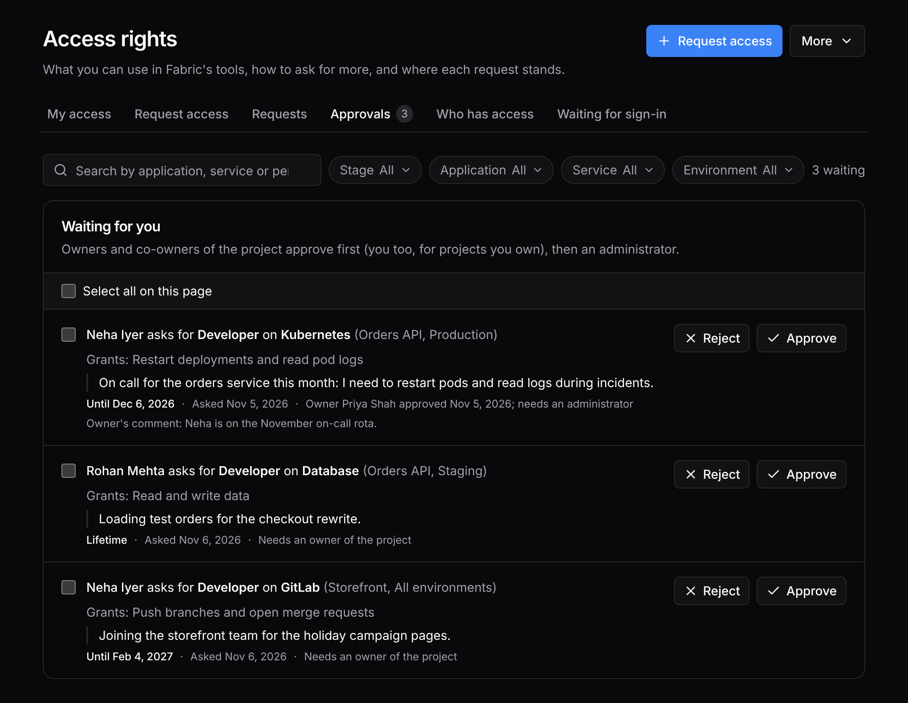
The side effect we use most is one page that answers "who can touch this application's production?" without opening six admin consoles. When someone leaves a project, removing them is one action in one place.
What arrives in Teams
Most people meet Fabric in Teams before they ever open it. Each application has a chat, and Fabric posts there:
- a card for each merge request pipeline, showing which job failed and why, down to the quality gate's numbers, with buttons to the pipeline, the merge request and the issues;
- a card for each deployment, updated in place as pods come up or fall over;
- a card when a merge request is assigned to you for review.
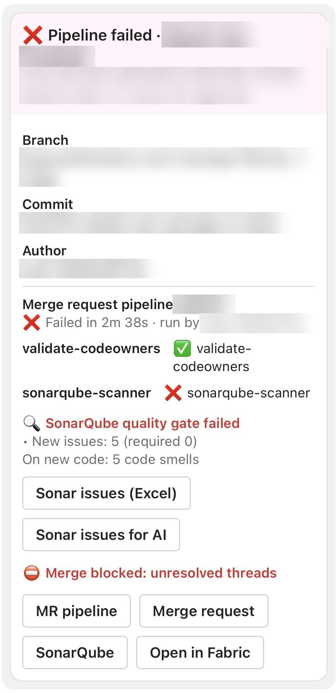
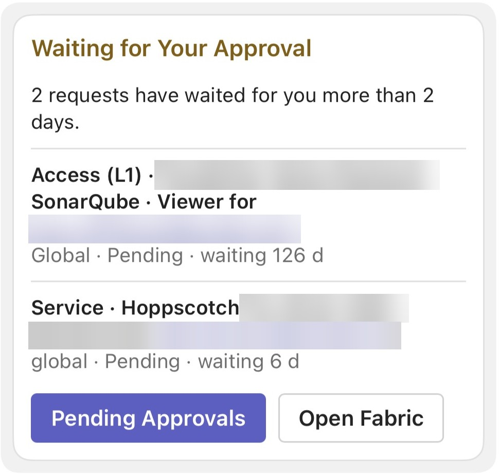
Approvers get their requests as cards with Approve and Reject on them, and one reminder each morning listing anything that has waited more than two days. The bot also takes requests: a project owner can ask for a service or check on what they have asked for without leaving the chat. None of this needed a new habit. People were already in Teams all day.
Taking things down
Because Fabric knows everything an application was given, it can take all of it away. Deleting an application is a request like any other, approved by an admin who is shown exactly what will go: the namespaces, the routes, the database, the storage, the access. Decommissioning turns everything off but keeps the data, and for a while it can be restored. Only after that window does a purge remove it for good and free the ID for reuse.
Before Fabric, an application that ended left things behind: a DNS record, a database nobody dared drop, a few people with access to a repository that no longer mattered. Those are small, and they add up.
None of the parts are unusual. GitLab, Flux, Vault and Kubernetes are what many teams use. The part we had to build was the one that knows which application each thing belongs to, and once that existed, the rest was mostly a matter of teaching it one more system at a time.